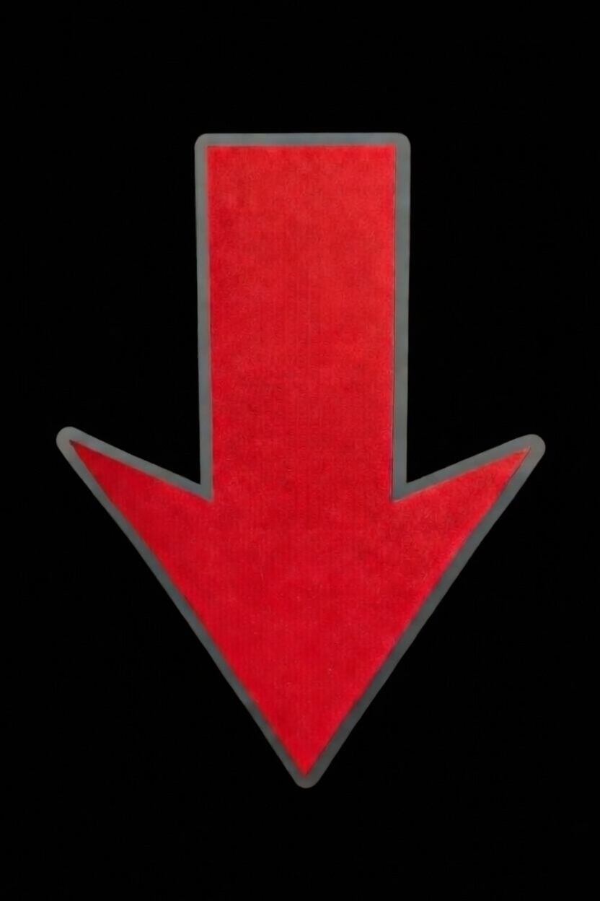
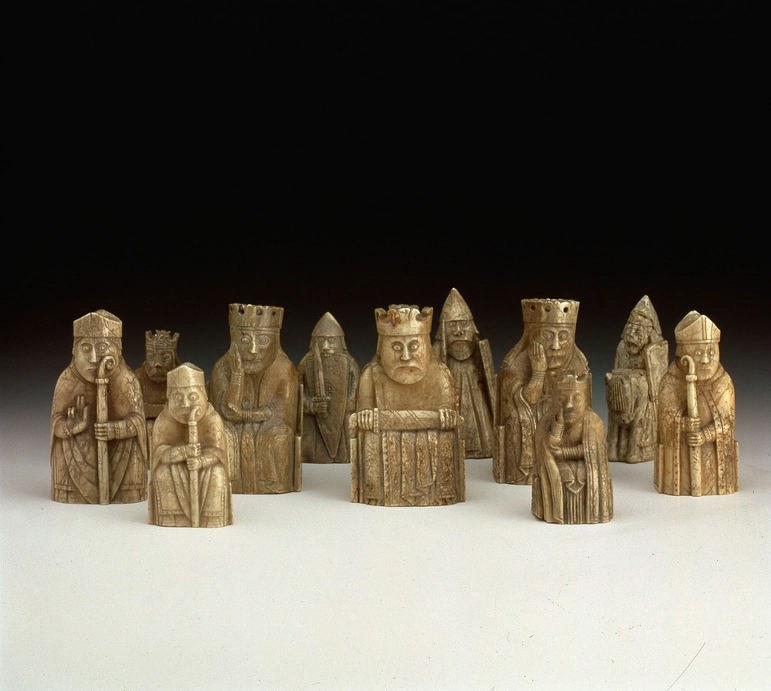

Bienvenue sur Chessmaster, vous avez toujours voulu etre un genie des echecs mais vous ne savez pas par ou commencer? eh bien vous etes au bon endroit
Vous etes a present entre de bonnes mains, ce site a ete cree par l'equipe chessmaster dans le but de former la nouvele generation des maitres de l'echequier

 |
Le jeu d’échecs trouve son origine en Inde au VIᵉ siècle avec le chaturanga, un jeu stratégique qui représentait les différentes unités de l’armée. Il s’est ensuite diffusé en Perse, où il prit le nom de shatranj, puis en Europe au Moyen Âge, évoluant progressivement vers les règles modernes. À l’époque, les pièces se déplaçaient plus lentement et la dame, par exemple, était beaucoup moins puissante qu’aujourd’hui. Les échecs modernes, avec leurs règles actuelles fixées vers la fin du XVe siècle, sont devenus plus dynamiques et compétitifs. Aujourd’hui, grâce aux tournois internationaux et aux ordinateurs, le jeu est à la fois un sport, un art stratégique et un domaine d’analyse scientifique avancée |
|---|
Le debut de votre formation commence ici